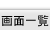
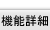
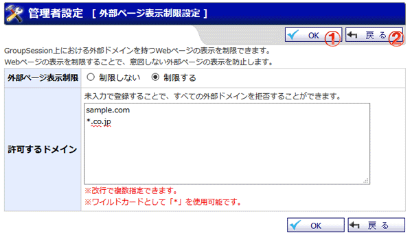
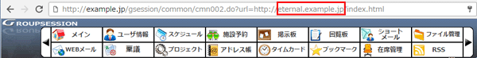
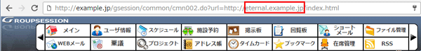

外部ページの表示制限を設定する画面です。

機能説明
OKボタン外部ページ表示制限設定確認画面へ遷移します。入力内容に不備がある場合エラーメッセージが表示されます。 |
戻るボタン遷移元の画面へ遷移します。 |
表示・入力項目説明
外部ページ表示制限
外部ページの表示を制限するための設定事項を表示します。
外部ページ表示制限設定詳細
1. 外部ページ表示制限設定の項目で「制限する」を選択します。
2. GroupSession上での表示を許可する外部ドメインを一つ50文字以内で指定します(複数指定可)。
3. 下図の赤枠内(ドメイン)と、2.で指定したいずれかの外部ドメインが一致している場合、ページの表示を許可します。

例
表示を許可する外部ドメインが「sample.com」の場合
ドメインが「sample.com」と一致する場合、ページを表示可能
表示を許可する外部ドメインが「*.co.jp」の場合
ドメインの末尾が「co.jp」の場合、ページを表示可能(example.co.jpなど)
表示を許可する外部ドメインが「sample*.com」の場合
ドメインの先頭が「sample」かつ末尾が「.com」の場合、ページを表示可能(sample01.comなど)
2. GroupSession上での表示を許可する外部ドメインを一つ50文字以内で指定します(複数指定可)。
3. 下図の赤枠内(ドメイン)と、2.で指定したいずれかの外部ドメインが一致している場合、ページの表示を許可します。

例
表示を許可する外部ドメインが「sample.com」の場合
ドメインが「sample.com」と一致する場合、ページを表示可能
表示を許可する外部ドメインが「*.co.jp」の場合
ドメインの末尾が「co.jp」の場合、ページを表示可能(example.co.jpなど)
表示を許可する外部ドメインが「sample*.com」の場合
ドメインの先頭が「sample」かつ末尾が「.com」の場合、ページを表示可能(sample01.comなど)